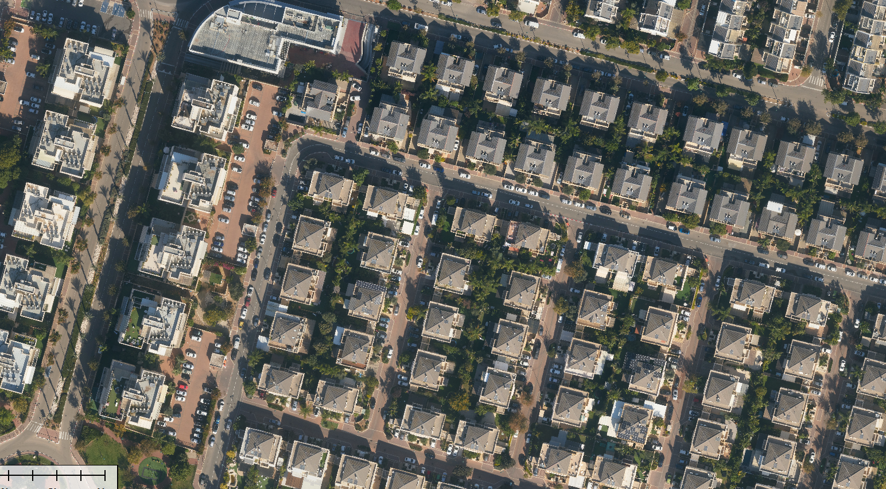
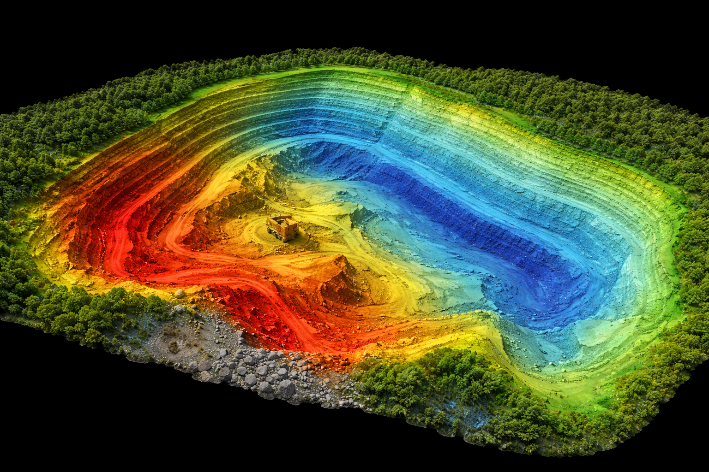
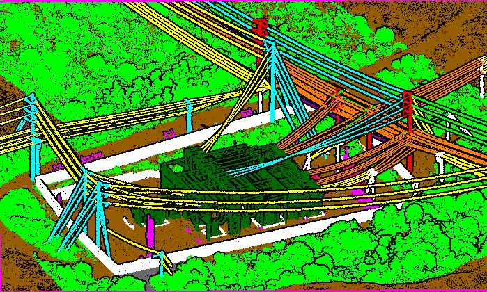
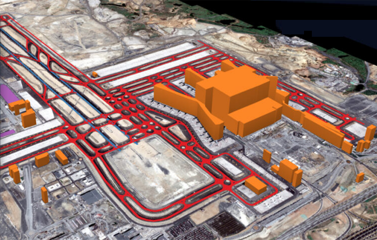
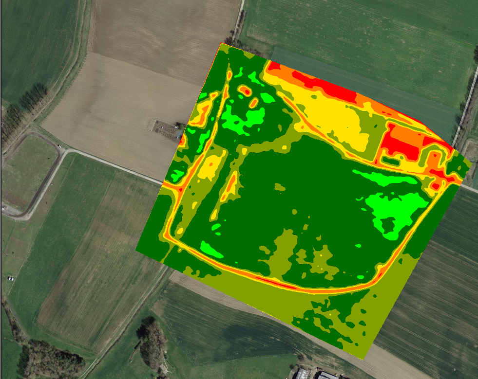
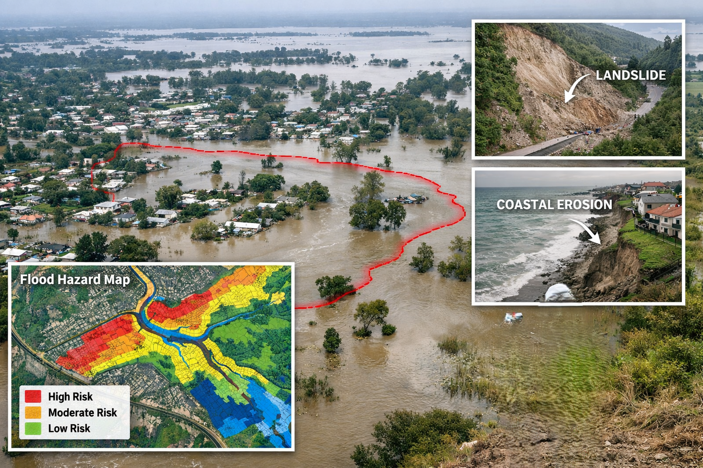

Lotus Geo provides mapping services for infrastructure and transportation to analyze accurate location-based data for planning, design, construction, operation, and maintenance of transport networks and public infrastructure.

Delivers geospatial mapping solutions that support city planners and municipalities in managing urban growth, zoning, utilities, mobility, and public services. Our spatial data helps authorities visualize land use, population distribution, and infrastructure networks for smarter and sustainable city development.

Provides high-precision terrain mapping and volumetric analysis for mining and quarry operations. We help monitor excavation progress, calculate stockpile volumes, plan haul roads, and ensure safety and regulatory compliance.

Supports power and utility companies with accurate mapping of transmission lines, substations, pipelines, and underground utilities. Our geospatial data helps in network planning, asset management, inspection, and maintenance to minimize outages and improve operational reliability.

For exploration, pipeline routing, facility planning, and monitoring of energy infrastructure Lotus Geo delivers mapping solutions. Our services provide terrain intelligence, right-of-way mapping, and risk assessment to support safe and compliant energy operations.

Lotus Geo offers contour mapping, progress monitoring, and as-built documentation for construction and real estate projects. Accurate spatial data helps developers, architects, and contractors plan projects correctly and track development stages.

Lotus Geo provides geospatial mapping for crop monitoring, land assessment, irrigation planning, and forest management. Our data helps optimize productivity, manage resources, and monitor environmental conditions.

Lotus Geo supports authorities with mapping for flood zones, landslide risk, environmental monitoring, and damage assessment. Our rapid data collection enables preparedness planning and faster response during emergencies.

✔ Successfully delivered large-scale global projects
✔ Expertise across North America, Europe, Middle East
✔ Managed 25,000+ sq. km mapping project with on-site execution
✔ Trusted by clients for accuracy, reliability, and consistency
We have executed numerous photogrammetry projects using advanced aerial triangulation, dense image matching, and 3D surface reconstruction techniques. Our team has consistently delivered high-accuracy geospatial outputs aligned with industry standards, supporting complex mapping and modeling requirements across varied terrains.


We possess extensive hands-on experience in LiDAR data processing, including point cloud classification, feature extraction, and terrain modeling. Our workflows are optimized for handling high-density datasets, ensuring precise segmentation and reliable outputs for engineering and infrastructure applications.


Our GIS team has delivered end-to-end geospatial solutions involving data capture, spatial analysis, and database management. We have successfully implemented robust GIS workflows for large-scale projects, ensuring data integrity, accuracy, and seamless integration with client systems.


We have generated high-resolution orthophotos using rigorous photogrammetric correction techniques and sensor calibration methods. Our production pipelines ensure geometrically accurate and radiometrically consistent outputs suitable for detailed analysis and decision-making


We have executed multiple BIM projects involving detailed 3D modeling and LOD-based development. Our expertise includes integrating architectural, structural, and MEP components into coordinated models that support efficient design, construction, and asset management.